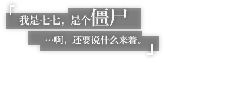

-
守护璃月港的「三眼五显仙人」之一，妙称「护法夜叉大将」。
虽然外表看起来是一个少年人，但一些有关他的传说，已在古卷中流传千年。
对望舒客栈中一道名为「杏仁豆腐」的菜颇为喜爱。
究其原因，是因为「杏仁豆腐」的味道，与他曾经吞噬过的「美梦」十分相似。

「南十字」船队头领，在璃月有着相当的声望。
有人说她能开山劈海，有人说她善举剑引雷，还有人说，连可怖的冥海巨兽都不是北斗的一合之敌。
外人也许会把这些话当做夸张的玩笑，但那些曾与北斗同航的人却会说——
「世上若真有什么冥海巨兽，那北斗一定能将它劈作两截。」
-
坐拥空中宫殿，有着大量传言的璃月权贵，脸上总是挂着优雅神秘的笑容。
作为「璃月七星」中的天权星，她不仅象征着权力与律法，也代表着财富与才智。
-
「万民堂」的新任大厨兼跑堂，对料理之道极具热情，最拿手的是麻辣菜肴。
年纪尚轻，但厨艺精湛，在吃虎岩的老饕之中颇有名气。
如果她要请你进行新品试吃，大可放心品尝，绝不会辜负你的期待，真的。

璃月港飞云商会的二少爷，自幼便以勤奋好学、待人礼貌闻名。
不过，即使是如此文雅的少年人，也有着动若脱兔的一面。
-
以璃月为中心，四处进行驱邪活动的云游方士。作为驱邪世家继承人，他自幼便有过人的绝技。
然而，这种绝技并非学自师门，而是与生俱来的异能——「纯阳之体」。

璃月七星之一，玉衡星。对「帝君一言而决的璃月」颇有微词——但实际上，神挺欣赏她这样的人。
她坚信与人类命运相关的事，应当由人类去做，而且人类一定可以做得更好。为了证明这一点，她比任何人都要努力。

药庐「不卜庐」的采药姑娘兼学徒。
因「仙缘」而拥有不死之身，行动时需要自己给自己下敕令。
七七的记忆力非常差，为了保证日常生活的顺利，她随身携带着一本笔记，写有各种各样的注意事项。
但在最不巧的那些日子里，她连「要看笔记」这件事都会忘记……


达达利亚——来自寒冰之国，心思变幻莫测的客人。
不必猜测他的想法，也无需质疑他的来意。只要记住：这副稚气未脱的外表下暗藏的，是锤炼到极致的战士之躯。

应「往生堂」邀请而来的神秘客卿。样貌俊美，举止高雅，拥有远超常人的学识。
虽说来历不明，却知礼数、晓规矩。坐镇「往生堂」，能行天地万物之典仪。

在璃月港，摇滚属于新兴艺术，辛焱则是这门艺术身先士卒的践行者。
她用音乐和热情歌颂着对「成见」的反抗，想要唤醒劳于世间昏昏沉沉的灵魂。
如果有机会，请千万不要错过她的演出。

璃月七星的秘书，体内流淌着人类与仙兽的血脉。
天性优雅娴静，但仙兽「麒麟」温柔的性情与坚定毅重的工作态度毫无冲突。
毕竟，甘雨坚信自己所做的一切工作都是为了践行与帝君的契约，谋求璃月众生的最大福祉。


胡桃——「往生堂」第七十七代堂主，掌控着璃月葬仪事务的重要人物。
尽心尽力地为人们完成送别之仪，维护着世间阴阳平衡之道。
除此以外还是个神奇打油诗人，诸多「杰作」被璃月人口口相传。

烟绯——身负半仙之血，能力一流的律法咨询师。
她在循途守辙与通权达变之间寻得了只属于自己的完美平衡点，凭借律法咨询师的独特身份和自成一派的经验手段，悉心守护着璃月的契约天平。
-
虽为人类之身，却是仙家弟子。过去曾生活在远离璃月港的山野之间，以红绳缚魂，修身养性。
气质淡雅如仙人，身上似乎藏有某些秘密。
-
「云翰社」现任当家，集剧作与演唱能力于一身的璃月戏曲名角。风格自成一派，雅致柔美，恰如其人。

自称供职于总务司的神秘人士，却又是总务司名录里的「不存在之人」。
神出鬼没，行踪飘忽，变幻无常，这些都是她的标志。
 魈
魈 北斗
北斗
 凝光
凝光
 乡菱
乡菱
 行秋
行秋
 重云
重云
 刻晴
刻晴 七七
七七 达达利亚
达达利亚 钟离
钟离
 辛焱
辛焱
 甘雨
甘雨
 胡桃
胡桃
 烟绯
烟绯
 申鹤
申鹤
 云堇
云堇
 夜兰
夜兰